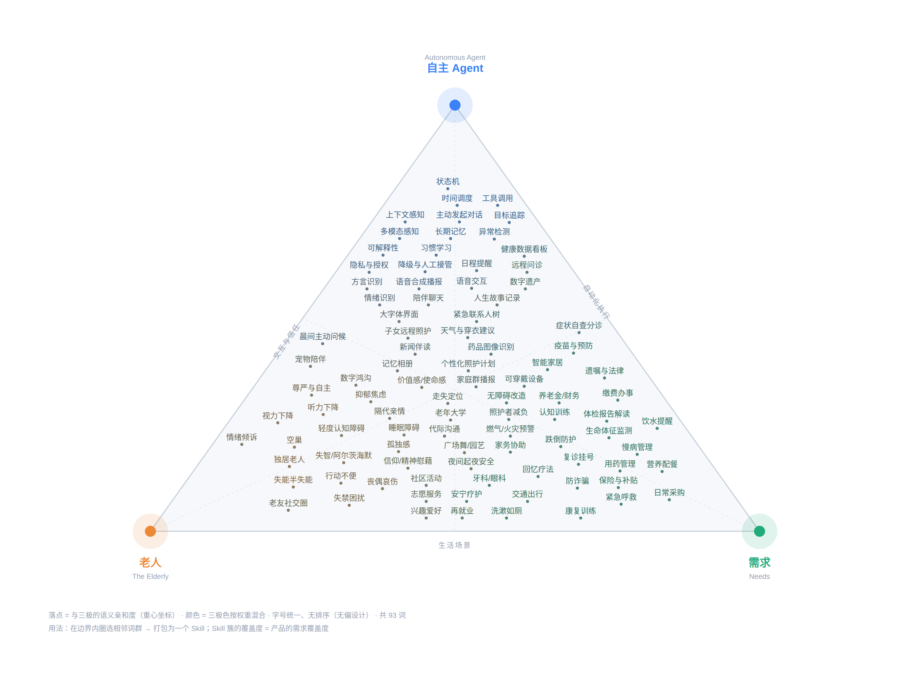

AGE WELL · SOCIAL GOOD CHALLENGE SG · AI AGENT / SKILLS TRACK
安安 AnAn
一个会主动找她的 Agent
The agent that reaches out first — before anyone asks it to.
Silence is an input.
A chatbot's input domain is {text}. AnAn's is {time, silence, state}.
LIVE NOW anan-iax1.onrender.com · the full story: yxiang-828.github.io/anan
Team SyntaxError · Yao Xiang · built by one human and a fleet of AI agents
THE PROBLEM · 问题
独居不是问题，无人知晓才是Living alone isn't the problem. Nobody knowing is.
88,400
户 · 10 年翻倍
seniors living alone — set to double within a decade
新加坡 65+ 独居老人
Singapore DOS / MOH, 2024
2×
抑郁症状风险
the risk of depressive symptoms
独居 vs 非独居老人
Duke-NUS CARE, 2018
S$37k
人均被骗损失 · 全龄最高
highest average scam loss of any age group
60+ 诈骗受害者
SPF Annual Scams Brief, 2025
她一个人住。她出事的那个早晨，最先知道的人，本来可以不是没人。
She lives alone. On the morning something goes wrong, the first to know
shouldn't have to be nobody. Today the safety net is a nightly phone call — a fall at 9 AM is discovered at 9 PM.
THE INSIGHT · 洞察
被动的工具，等不到主动的她A reactive tool waits forever for a user who never opens it.
85.3%
60+ 老人会上网
of seniors use the internet
34.7%
60+ 老人会网购
actually transact online
会上网 ≠ 会用。健康 App 的未读角标在她手机上堆成 99+。
Being online is not the same as opening the app. The health app's badge just climbs to 99+.
输入域的鸿沟 · THE INPUT-DOMAIN GAP
chatbot 聊天机器人：{ text }
她不输入，它就不存在
if she never types, it never exists
安安 AnAn：{ time, silence, state }
她的沉默，就是我们的输入
her silence is our input
So AnAn runs on a clock, not on a prompt. It wakes by itself,
inspects the world, and decides whether anything is worth doing — most of the time correctly deciding that nothing is.
Dormancy is a first-class behaviour, not a bug.
THE ORIGIN · 我们从哪里开始
不是聊天框，是一个自主有机体Not a chat box — an autonomous organism with organs.
安安的内核器官来自一个 18 篇文献的自主性研究计划——每一条设计法则都由一次真实失败换来。
The kernel's organs come from an 18-paper autonomy research programme; every law below was paid for by a real failure.
WAKE
唤醒只是机会 ≠ 认知
waking is only an opportunity
≠
THINK
要不要想，是独立决定
whether to think is its own call
≠
ACT
做不做，又是一个决定
and acting is a third
每个动作的七相位流水线，每相位一条回执，可回放
— seven phases per action, one receipt each, fully replayable
WAKE
→
THINK
→
REVALIDATE
→
GATE
→
ACT
→
RECEIPT
→
COMMIT
实测截屏：控制台的 skill 灯牌、状态机与决策线 · Real screenshot — the live skill rack, state machine and planner line. Everything below is an actual receipt row.
durable inbox · attention scheduler · prospective store · stale-decision revalidation · permission envelope · effect-scope receipts · practical-liveness watchdog
THE SKELETON · 骨架
Hero Loop：为一个问题而生的状态机One state machine, built to answer exactly one question.
“她没有回应，接下来会发生什么？”
— “She hasn't answered. What happens next?”
IDLE
→
CHECKIN_SENT
→
SILENCE_1
→
SILENCE_2
→
ESCALATED
→
RESOLVED
- 07:30 主动晨候 → 无回应 → 换渠道重试 → 仍无回应 → 沿联系人树升级（女儿 → 儿子 → 邻居，每一跳独立回执）→ 家属一键回电 → 闭环写入记忆
07:30 greeting → no answer → retry on a second channel → still nothing → walk the contact tree, each hop its own idempotent receipt → one tap closes the loop.
- 每次触碰都是心跳：任何一次点按都会消解沉默网；她自己的触碰连 ESCALATED 都能直接消解——她的存活性高于一切规则
Every touch is a heartbeat. Her own touch resolves even an ESCALATED loop — her liveness outranks every rule in the machine.
- 联系人树真的会走：家属超时未回 → 自动走下一位；树走空 → 更长窗口从头再走
The tree really walks, and escalation never loses a firing route — practical liveness, watched by a watchdog that counts firing routes rather than states.
07:30 真机截屏：安安先开口，双语卡片背后同时布防 60 分钟聆听窗。
Real device at 07:30 — AnAn speaks first; the 60-minute listening window arms silently behind the card.
THE EXPLORATION · 设计过程
93 个词的问题空间，无偏散布A 93-word problem space, mapped before a line was written.

自主 Agent × 老人 × 需求 · 三极三元图
A ternary map: autonomous-agent capability × elder reality × unmet need. Position is semantic affinity; colour is the three-pole blend. Spread first, converge second.
- 加权收敛矩阵：影响力 / 自主性可见度 / 可行性 / 演示戏剧性
Converged on a weighted matrix — impact, visibility of autonomy, feasibility, demo drama.
- 刻意不做：跌倒检测（需硬件）· 药品 OCR（30 组都会做）· 认知小游戏（scope 爆炸）
Deliberately not built: fall-detection hardware, pill OCR, cognitive mini-games.
- 设计从词汇开始，不从代码开始：说不出名字的行为，就不实现
Design began with vocabulary, not code. If a behaviour couldn't be named inside the polygon, it wasn't built.
评委看到的是一个被探索过的面，不是拍脑袋的点。
You're looking at an explored surface, not a lucky guess.
THE SOUL · 灵魂
看不见的自主不可信——所以内核长了脸Invisible autonomy is untrustworthy. So the kernel grew a face.
10 STATES · 40 FRAMES — 由第二个 AI agent 绘制的像素状态场，附每帧时序与锚点规范。
A pixel state-field drawn by a second AI agent, shipped with per-frame timings and anchor specs.
10 个像素状态 ↔ 内核状态一一对应
Ten pixel states map one-to-one onto kernel states.
dormant 睡觉 · think 歪头 · 升级时
飞出婆婆的手机、落进女儿的手机
It sleeps when the system is dormant, tilts its head while the model thinks, and on escalation it flies out of grandma's phone toward her daughter's.
评委不用读日志，看鸟就知道系统在干什么
Nobody needs to read a log to see what the agent is doing — the bird performs every receipt as it lands.
对抗性评审闸 · ADVERSARIAL REVIEW GATE
像素包由 codex 绘制——它还对抗性 block 了我们的渲染器，附可复现缺陷报告（帧位 133.333%、每帧时序）。修复跟在报告后面。
The mascot agent formally blocked the builder's sprite renderer with a reproducible defect report. The fix followed the report — multi-agent construction with a real gate in between.
THE FLESH · 血肉
9 个 Skill，同一条流水线，全部过闸Nine skills, one pipeline, every one of them gated.
| Skill | 触发 Trigger | 实际发生什么 · what actually happens |
|---|
| greet_checkin | cron 07:30 | 合成双语晨候；发出即布防确认窗 · bilingual greeting; arms the ack window |
| companion_chat | 老人语音（路由） | 基于事实作答；每次交流都是心跳 · grounded reply; each exchange is a heartbeat |
| relay_family | 老人语音（路由） | 她的话原样送达家属 · her words carried across, receipt-confirmed |
| med_reminder | cron 08:00 / 20:00 | [我吃了] = 心跳；布防全天沉默网 · “taken” is a heartbeat; arms the all-day net |
| escalate_tree | SILENCE_2 / 走树超时 | Telegram 警报卡，幂等按钮闭环 · alert card; idempotent buttons close the loop |
| family_bulletin | cron 20:05 | 当日报摘：用药 / 情绪 / 洞察 / 健康 · the evening digest, bilingual |
| care_insight | cron 21:00 | 每日提炼一条洞察 · memory that compounds — Day 7 knows her better than Day 1 |
| safe_range | 地理围栏事件 | 走失警报 + 实时地图 + 回圈报平安 · geofence alert, live map, automatic all-clear |
| health_scan | CV 评分事件 | 鼓励式回读；异常立刻通知监护人 · elder reflection, guardian fanout on anomaly |
REGISTRY LAW · 实测 MEASURED
97% 选对率
仅 8% token 成本
目录只载 name + 一行能力；全契约随 skill 携带。
The registry carries only a name and one capability line — full contracts travel with the skill. 97% correct selection at 8% of the token cost.
组合律 · WORDS COME FROM THE MODEL
skill 组装意图与事实；模型写每一个字。没有罐头台词；降级模式渲染带标签的数据。
Skills assemble intent and facts; the model writes every word. Degraded mode renders labelled data instead of faking a sentence.
刻意不做 · deliberately absent
跌倒检测硬件 · 医疗建议 · 代打 995
No hardware fall claims, no medical advice, no emergency calls on the agent's own authority.
THE VOICE · 声音
克隆的不是声音，是在场We don't clone a voice. We clone presence.
- 家属先选语言，再读一段 10 秒固定文本 → 该语言的参考声纹
Language first, then one fixed 10-second script. That (clip, script) pair becomes the reference voiceprint for that language.
- 声纹永不跨语言复用；热加载生效；试听即证
A print is never reused across languages. Hot-reloaded, and auditionable on the spot.
- 双层语音：本地 qwen3-TTS 克隆 · 云端 ElevenLabs 三键粘性轮换，每次轮换留回执
Two tiers — local qwen3-TTS cloning, or hosted ElevenLabs with a sticky three-key rotation. Every rotation leaves a receipt.
- 降级阶梯的终点是诚实的静默——沉默好过跑调的中文
The last rung of the ladder is honest silence. Silence beats mangled Mandarin.
“她听到的不是 AI。是女儿。”
“What she hears isn't an AI. It's her daughter.”
左：/family 真实录音页——语言优先、固定脚本、同意声明就写在页面上。
Left: the real /family recording page — language first, fixed script, consent stated in place.
THE SURFACES · 五端
五端齐活，一个心智Five surfaces, one mind — and the app runs inside the console.
/elder 乐龄端5 屏 2 操作 · 无输入框 · 透明日志把回执讲成人话
Five screens, two gestures, no text box. The log speaks receipts in plain language.
/health-lab心率 rPPG · 活动度姿态 · 微笑对称（FAST 面瘫筛查）
Camera CV runs entirely on-device; only the score ever leaves the browser.
/family 家属端联系人 / 声纹录制 / 实时地图；陌生 Telegram 用户自动收到自己的 ID
Contacts, voice, live map. Unknown senders are auto-replied their own chat ID.
/ 控制台 · the console解剖台而非 UI；
老人端以真实 iframe 嵌在里面An operating theatre, not a UI — the elder app is embedded live, so cause and effect sit on one screen.
Telegram是适配器不是产品：警报 / 播报 / 走失卡 / 健康异常
An adapter, not a product — the family installs nothing at all.
上：控制台全景，老人端真实嵌入。下：同一屏的七相位决策日志。
Top: the console with the elder app embedded live. Bottom: the seven-phase decision log from the same screen.
THE PROOF · 证据
我们最骄傲的时刻，是一个没有发生的决定The moment we're proudest of is a decision that never happened.
REVALIDATE · 实测回放 · REPLAYED FROM RECEIPTS
verdict: STALE — candidate cancelled, no external action
升级决策生成后、执行前，一条赛跑的心跳到达——候选作废。误报不会骚扰家人。
A heartbeat raced the decision between creation and execution. The candidate was cancelled before anything external happened — the family was never falsely alarmed.
真实日志截屏，最后几行即 STALE 判定与取消 · the real log — the last lines are the STALE verdict and the cancellation.
自主档 · AUTONOMOUS
tts.speak · notify.elder
notify.family · memory.write
批准档 · FAMILY-APPROVAL
联系邻居 / 改日程
Telegram 按钮就是批准闸
永不档 · NEVER
call.995 · medical.advice
finance.any — 大声拒绝
安全从不依赖模型 · SAFETY NEVER DEPENDS ON THE MODEL
地理围栏 / 健康阈值 / 升级时序全是朴素代码。拿走 LLM，安全网照样开火。
Geofence, health thresholds and escalation timing are plain deterministic code. Take the LLM away and the safety net still fires.
模型的自由在闸内：每个路口给出选项信封与确定性下限，模型的选择与下限一并入账。
At each junction the model gets an options envelope and a deterministic floor. Both its choice and that floor are written into the receipt — so the model picks words and bounded options, never whether someone gets help.
同一次运行的 skill 灯牌与状态机 · the same run's skill rack and state machine.
THE LINEAGE · 它是怎么被建成的
一个人，一支 agent 舰队，中间是评审闸One human, a fleet of agents, and review gates in between.
1
自主性研究计划 · the autonomy research programme18 篇文献 · 内核器官与认识论 — 18 papers behind the kernel's organs
2
生产级 agent 实测法则 · measured laws from production agentsskill 菜单上下文律 · 调度失败律 — context and scheduling-failure laws, measured rather than assumed
3
两次黑客松整体移植 · two hackathons transplanted wholeKampungKaki 地图 · Synapxe 三页 CV — the map and the camera-CV pages, ported verbatim
4
多智能体建造 · multi-agent construction规划 × 像素吉祥物 × 对抗性代码评审——评审闸真的挡下过一次合并
技艺、法则与探针台账在 agent 之间以文件流转，不是靠感觉。每一次探针——包括失败——都留档。
Skills, doctrine and probe ledgers moved between agents as files, not vibes. Every probe is archived, failures included — because a document someone wrote is not evidence; a receipt is.
真实提交史截屏——每条信息记录的是决定与理由，不是 “fix stuff”。
The real commit wall: every message records a decision and the reason for it.
40% 评分项的证据不在这一页的字里，在整个仓库的提交史里。
The evidence for the 40% “use of AI tools” criterion isn't in these words — it's in the repository's history.
THE CLOSE · 收尾
88,400 位独居老人。从“每晚一通电话才知道”，到“沉默 60 分钟内有人到场”。
88,400 seniors living alone. From “a nightly phone call to find out” to “someone acts within 60 minutes of silence.”
与新加坡国家计划 Age Well SG 同名同频 · named for, and aligned with, the national programme.
LIVE DEMO
anan-iax1.onrender.com
the agent, running right now
THE STORY
yxiang-828.github.io/anan
how it was built, scroll by scroll
SOURCE
github.com/Yxiang-828/anan
kernel · skills · receipts
DEMO VIDEO
AnAn-DemoVideo
the whole loop, end to end
Silence is an input.
她的沉默会被听见——在她需要之前，而不是之后。
Her silence gets heard — before she needs it to be, not after.
Team SyntaxError · Yao Xiang · 安安 AnAn · Age Well Social Good Challenge Singapore · AI Agent / Skills track